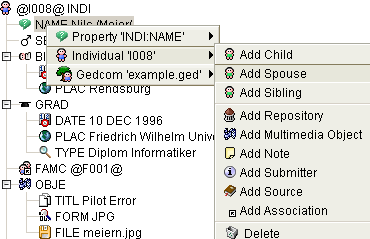
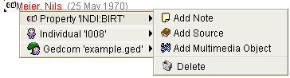
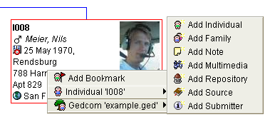

Eine wesentliche Arbeitserleichterung sind die Kontextmenüs. Bei Rechtsklick auf irgend ein Feld in einem Fenster zeigt Ihnen GenJ, was sie an dieser Stelle machen können. Beispiele sind 'Partner hinzufügen', 'Eigenschaft hinzufügen', 'Löschen' u.v.m.
(Bei Ihrer Plattform kann eine andere Maus-Aktion erforderlich sein, um das Kontextmenü aufzurufen.)
Im Kontextmenüs erscheint immer zuoberst ein zur angeklickten Eigenschaft gehöriges Untermenü. Darunter ein Untermenü für das Objekt, z.B. die Person, darunter das Untermenü für die ganze Datei.
Im folgendem Beispiel wird das Kontextmenü für die Eigenschaft 'Namen' angezeigt. Das zweite Untermenü für das Objekt (hier eine Person) ist gerade aufgeklappt und zeigt die möglichen Aktionen.

Das Untermenü für die Person 'I008' ermöglicht die folgenden Aktionen:
Das nächste Beispiel zeigt ein Kontextmenü für eine Eigenschaft Geburt (BIRT) mit den möglichen Aktionen (erstes Untermenü):

Mögliche Aktionen sind:
Zum Schluss ein Beispiel das veranschaulicht, wie der Inhalt von Kontextmenüs dynamisch erstellt wird – hier in der Baum-Ansicht:

Die Aktionen, die im geöffneten Untermenü angezeigt werden, erlauben das Hinzufügen eines neuen Objekts in der Datei example.ged.
Es ist übrigens ratsam, von vorhandenen Objekten auszugehen, statt neue bzw. alleinstehende Objekte wie Personen oder Familien hinzuzufügen. Um verknüpfte Objekte, z.B. Verwandtschaftsbeziehungen, zu erzeugen, benutzen Sie das Untermenü für Eigenschaften oder Objekte wie oben beschrieben.